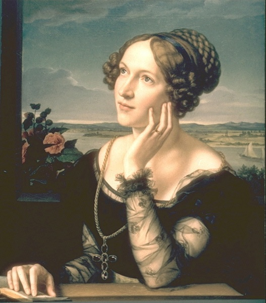

Введение
 Ада Лавлейс (1815–1852) – английский математик, известная как первый программист в истории, которая создала первую программу для аналитической машины Чарльза Бэббиджа, а также ввела термины «цикл» и «рабочая ячейка». Дочь поэта Джорджа Байрона, Ада получила блестящее образование в области математики и естественных наук, что позволило ей глубже понять возможности аналитической машины, создав не просто алгоритм расчетов, но и алгоритм для вычислений.яндекс нейро